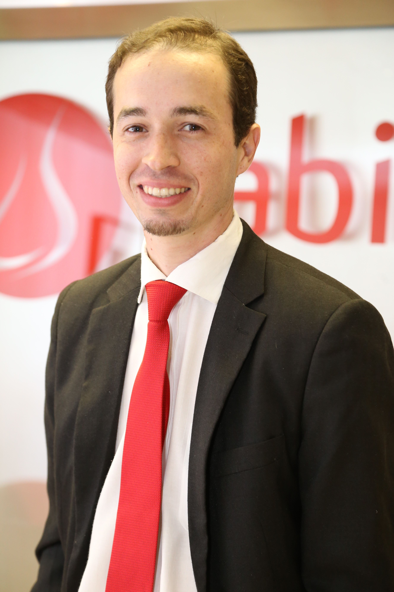

Captamos entrevista Fábio Deboni, Gerente Executivo do Instituto Sabin
07 de Novembro de 2017 às 07:00
Antes, era o recuo do financiamento internacional. Depois, veio a crise econômica e, com ela, o refluxo de recursos nacionais. Agora, o cenário é de escassez. Qual a saída para que organizações da sociedade civil (OSCs) resistam a tantas “intempéries”? Na análise de Fábio Deboni, gerente executivo do Instituto Sabin, que atua na área de saúde, a resposta pode estar na prestação de serviços.
As instituições, sugere Deboni, precisam se abrir a mudanças e repensar sua atuação, até mesmo, por uma questão de sobrevivência. “As que estão paradas tendem a passar mais dificuldades e, algumas, a fechar as portas.”
Nesta entrevista, o autor do livro “Reflexões Contemporâneas sobre Investimento Social Privado” esmiúça a questão e aponta as novas tendências para o terceiro setor. Confira!
Captamos: Como a inovação atuaria no setor social privado?
Fábio Deboni: O que você está buscando com inovação social? Formas inovadoras de enfrentar problemas sociais ou ambientais, e é preciso ter muita atenção na maneira como se vai fazer isso. O modo é tão importante quanto a solução, e geralmente está relacionado a formas mais participativas, democráticas e colaborativas. Além disso, as inovações sociais procuram sair da superfície dos problemas e ir nas raízes. Estamos falando de mudança sistêmica. Questionar modelo de sociedade, sistema político, estrutura de desigualdade, das relações de gênero. Todo esse conjunto de questões estruturantes vem à tona. Essa agenda está muito forte no mundo e vem ganhando corpo na América Latina. Ela encontra com a agenda da filantropia de institutos e fundações, que estão passando por um momento de reinvenção, de repensar o que está sendo feito. Isso encontra com outro bloco, que é a agenda da sociedade civil sobre sustentabilidade econômica. Como eu continuo fazendo o que eu sempre fiz, mas buscando novas formas de fazer? Essas três agendas se encontram com a de negócios sociais, a lógica de como uso mecanismos de mercado para enfrentar problemas sociais.
C: As organizações da sociedade civil estão se repensando. O que significa isso? O que havia antes? Dá para dizer para onde estão indo?
FD: Há escassez de recursos. Vejo dois movimentos: um é o de buscar empresas, institutos e fundações. Não tenho mais recursos internacionais e governamentais e preciso de recurso privado. O outro é o de buscar pessoa física, que é uma fronteira a ser explorada. Também se recoloca a questão do porquê de a organização existir. Não é só olhar a missão e o objetivo, mas sim um exercício ideológico. Sou uma ONG, nasci com uma base social, territorial, com uma causa que não consegue mais financiamento. Preciso, então, do setor privado, que não vai necessariamente financiar a mesma coisa que eu fazia. Vou ter de abrir mão de algo para compor com esse privado. Como eu mudo essa direção e, agora forçando a barra na figura de linguagem, como viro prestador de serviços de uma empresa, de um instituto ou de uma fundação, abrindo mão do meu histórico de atuação? Estamos olhando na superfície a luta pela sobrevivência, mas, quando mergulhamos, vemos outras coisas para além do recurso, como a questão ideológica. Qual a essência da organização? Ela está enfrentando quais questões agora? Ela está preparada para fazer essa virada em termos de equipe, de modus operandi? Uma coisa é atuar com uma base territorial, com uma causa histórica; outra é atuar sendo um "prestador de serviços" de um privado.
C: O que uma organização que vai conversar com o setor privado faz para não perder o sentido da sua causa? Até onde ceder?
FD: A tendência é considerar que se perde menos autonomia quando apoiado por pessoas físicas, mas dá muito mais trabalho gerir essa carteira de doadores. Do lado privado, o movimento que mais se tem visto é a prestação de serviços. O setor privado tem desafios e demandas, e posso oferecer a ele soluções que já tenho. A questão é como plugar isso no debate ideológico. Não tem forma, é caso a caso. Há organizações que mudaram completamente o que eram. Existem aquelas que buscaram modelos híbridos, com prestação de serviços e parte da renda alimentando o lado mais histórico. Todos os caminhos mostram que elas estão se repensando. As que estão paradas tendem a passar mais dificuldades e, algumas, a fechar as portas.
C: Isso traz a questão da diversificação de fontes. Como você vê esse movimento? Ainda há resistências, por exemplo, a gerar recursos?
FD: Está errada a ideia de que, se é sem fins lucrativos, não pode gerar receitas. Não pode gerar lucro, é muito diferente. O que alimenta esse entendimento equivocado é, muitas vezes, a dificuldade técnica que organizações têm em relação a questões jurídicas e contábeis. Mesmo que estejam claras essas questões, a organização está numa inércia, pois tem de sair da zona de conforto e se reinventar e, ao fazer isso, não vejo outro caminho que não seja gerar receita, para além da captação com pessoa física, edital etc. É uma lógica muito diferente da tradicional. Não estou falando daquela geração de receita da rifa, do bazar, não é isso. É quase como pensar qual é o modelo de negócios da sua organização, que é uma pergunta estranha ainda. Quanto você custa mensalmente? Como você pode ser mais eficiente? Que tipo de serviço ou produto você pode "oferecer no mercado”? Esses questionamentos o fazem mudar a maneira como enxerga a organização numa lógica de negócio. Só que junto vem o pacote ideológico. Não criei minha organização para o mercado. Criei para uma base, uma causa. A questão é se são tão inconciliáveis assim esses dois mundos. E temos visto que não, que há pontos de contato e de convergências e, em alguns casos, dá para conversar sem perder muito a essência da organização.
C: “Sem perder muito” sugere que vai perder alguma coisa.
FD: Vai perder. Há algumas causas que são menos moldáveis como negócios. Por exemplo, uma organização que tenha uma luta histórica sobre garantia de direitos humanos. É difícil modelar isso como um negócio. Para algumas organizações, é muito mais difícil fazer essa transição, e talvez não consigam. E é bom demarcar esse terreno, pois é aí que está o papel da filantropia. Sou um instituto ou uma fundação e estou vendo todo esse movimento e também estou me repensando, abrindo uma parte do meu recurso para essa perspectiva de negócio, mas preciso ter uma parte do meu dinheiro meio que carimbada para essas organizações de garantia de direitos, porque elas, se não for a filantropia a financiá-las, vão ter problema. Algumas outras têm conseguido perceber caminhos. Talvez abra menos mão da questão conceitual, mas tem de abrir mão no sentido de mudar a maneira de atuação. Na causa da educação, por exemplo, tem um monte de gente modelando com formato de negócio. A dica que eu dou para as organizações é: coloque uma lupa na causa em que você atua, dê uma olhada no mercado a seu redor e veja o que as pessoas estão fazendo na lógica de mercado. Você vai encontrar caminhos interessantes. Mas procurar um exemplo não significa copiar. Cada organização está encontrando formas diferentes que conversem com a ideologia delas, com sua história. Não existe uma receita. O importante é abrir a mente em relação a essa agenda.
C: Como isso desafia a preparação das pessoas que estão no setor?
FD: É preciso tentar derrubar um pouco a fronteira entre privado, governo e terceiro setor. É preciso ainda acabar com a lógica de que é necessário fazer o curso tal para ser a porta de entrada para o terceiro setor. Sou engenheiro agrônomo, trabalho na área de saúde, fiquei oito anos no governo federal, já tinha passado pelo terceiro setor e estou no privado. Aprendi a entender a lógica desses setores. Não fiz nenhum curso específico. Percebo que cada vez mais os profissionais vão se cristalizando num setor e bloqueiam a permeabilidade para conversar com outros. Ao mesmo tempo, vemos um pessoal novo que está chegando e que talvez já traga consigo um pouco mais essa visão de fronteiras que caíram. Esse encontro de gerações está sendo interessante.
C: Você consegue ver a busca por inovação acontecendo em organizações menores, com atuação mais restrita? O que acontecerá com elas?
FD: Apoiamos hoje 28 organizações, em 11 estados. Temos feito um esforço muito grande de construção de redes. A organização A e B estão em territórios diferentes, mas compartilham desafios. Por que não colocá-las para trocar essas experiências? No começo, existe aquela resistência de “não tenho tempo, preciso vender o almoço para pagar a janta”, mas pedimos que abram um tempo para se permitir encontrar com outros e construir um espaço de pertencimento. É quase como um cooperativismo. Tenho demanda por capacitação, mas não posso pagar. Se quatro ou cinco se juntarem, elas conseguem pagar um consultor. O desafio é: quem vai puxar? Tem de ser alguma instituição que entenda que isso é relevante para todos, inclusive para ela.
C: Você está falando de uma instituição maior e com um olhar mais sistêmico?
FD: Não necessariamente. Tende a funcionar mais se você tem apoiadores dessas organizações menores provocando um pouco esse movimento, mas pode ter alguma organização local, de porte pequeno, que tenha esse mindset (mentalidade) de articulação.
C: Tendemos a pensar inovação ligada à tecnologia e à informática, e isso é uma barreira para organizações menores. Mas inovação é isso mesmo?
FD: Tendemos sempre a considerar como tecnologia, mas não se resume só a isso. Há a inovação de processos. Você pode redesenhar os da sua organização sem usar tecnologia. Será que nossa gestão é eficiente? É uma palavra que o terceiro setor não gosta. Muitas vezes, gasta tempo com reuniões improdutivas, quando poderia encontrar novas formas de tomar decisões e compartilhar informações, sobrando mais tempo para reflexões. A grande trava é de mindset. Está no piloto automático, sobrevivendo, se afogando e não consegue parar, respirar e olhar. A organização pode ela mesma criar esse ambiente, ter no conselho alguém com esse perfil para fazer análise de conjuntura, de cenário.
C: Há alguma receita para a formação de conselhos?
FD: A dica que eu dou é tomar cuidado para não virar uma mega-assembleia. Tem de ser um número que você administre numa reunião organizada. Colocar uma quantidade reduzida, mas pessoas chave que vão me apoiar. Não adianta chamar o Papa Francisco. Tem de chamar quem conhece a organização e pode contribuir. Mas não há fórmula.
C: Num cenário de escassez de recursos, há uma demanda por mais impacto. Mas o que significa isso? Como avaliar?
FD: O tema do impacto veio com força. O que estão entregando para a sociedade? As organizações estão meio resistentes a entrar nesse tema e usando como cortina de fumaça o custo de fazer a avaliação. É uma falsa dicotomia. A questão é: qual a melhor maneira de atuação para potencializar o impacto que quer ter? Depois vem a discussão sobre como medir isso. O problema é que muitas organizações já querem começar com o banquete completo da avaliação de impacto. Hoje mal e porcamente conseguem saber o número de pessoas beneficiadas, custo por intervenção. Se nem conseguem fazer o feijão com arroz...Na medida em que reúnem indicadores básicos, vai subindo a régua. E não pode esquecer da transparência. Não estou falando só de ter site com relatório e prestação de contas, e sim sobre a maneira como as organizações se relacionam com seus pares, a comunidade, o conselho. Em geral, elas são pouco transparentes.
C: Há impactos que são de médio a longo prazo. Mas o setor privado procura no curto prazo. Como se conciliam esses tempos?
FD: Essa questão traz o debate sobre financiamento. Existem duas forças: a do financiador, que quer a coisa para ontem, e a da organização, que quer algo mais a médio prazo. Há uma tendência forte de o financiador querer para ontem, mas acho que isso é mais uma estratégia de defesa para conhecer a organização, ver como funciona a parceria no curto prazo e, a partir disso, ganhar confiança e abrir uma segunda etapa para algo de mais longo prazo. Se as organizações percebem esse movimento, elas se permitem fazer algo mais no curto prazo, mas já construindo o terreno para o médio prazo. Por outro lado, existe um debate que vem de fora sobre Venture Philanthropy, que é apoiar causas mais estruturantes, que requerem indicadores com um pouco mais de tempo. Esses dois mundos estão convivendo. Há organizações vendendo serviços de curto prazo para privados e, a partir dali, abrindo contratos de médio e longo prazo. Ao mesmo tempo, há outras se abrindo mais para o médio e longo prazo, procurando parceiros.
C: Qual sua perspectiva para o cenário no Brasil nos próximos anos? As organizações estão percebendo essas mudanças?
FD: É um momento muito difícil. A água está subindo. Algumas vão conseguir sair nadando, outras, não. Vão ficar no caminho aquelas que resistirem a se repensar. É preciso se reinventar, olhar para o cenário, olhar para si e no limite ver que não quer mais continuar. Ou perceber que tem de ter uma mudança muito drástica, virar prestador e uma parte dos fundadores saírem. É comum acontecerem rachas. Minha crítica é que as de vanguarda deveriam ter um pouco mais de preocupação com o ecossistema e parar de olhar apenas para sua sobrevivência. Como uma organização maior, mais consolidada, contribui para seu setor temático de atuação, para sua região? Como contribui para fazer com que as com mais dificuldade percebam essa mudança? De que maneira abro para elas como fizemos essa transição, quem ajudou, como podemos colaborar mais? O que a gente vê é que, como fecharam as torneiras de recursos, o primeiro momento é de mais disputa, e não de mais colaboração. O advento da economia colaborativa está vindo com força, está mudando a maneira como as empresas estão vendendo produtos. Isso conversa muito com o terceiro setor. Mas algumas vão ficar pelo caminho. Quais? As que resistirem mais a essa leitura.
Assista a dica do Fábio Deboni:
As instituições, sugere Deboni, precisam se abrir a mudanças e repensar sua atuação, até mesmo, por uma questão de sobrevivência. “As que estão paradas tendem a passar mais dificuldades e, algumas, a fechar as portas.”
Nesta entrevista, o autor do livro “Reflexões Contemporâneas sobre Investimento Social Privado” esmiúça a questão e aponta as novas tendências para o terceiro setor. Confira!
Captamos: Como a inovação atuaria no setor social privado?
Fábio Deboni: O que você está buscando com inovação social? Formas inovadoras de enfrentar problemas sociais ou ambientais, e é preciso ter muita atenção na maneira como se vai fazer isso. O modo é tão importante quanto a solução, e geralmente está relacionado a formas mais participativas, democráticas e colaborativas. Além disso, as inovações sociais procuram sair da superfície dos problemas e ir nas raízes. Estamos falando de mudança sistêmica. Questionar modelo de sociedade, sistema político, estrutura de desigualdade, das relações de gênero. Todo esse conjunto de questões estruturantes vem à tona. Essa agenda está muito forte no mundo e vem ganhando corpo na América Latina. Ela encontra com a agenda da filantropia de institutos e fundações, que estão passando por um momento de reinvenção, de repensar o que está sendo feito. Isso encontra com outro bloco, que é a agenda da sociedade civil sobre sustentabilidade econômica. Como eu continuo fazendo o que eu sempre fiz, mas buscando novas formas de fazer? Essas três agendas se encontram com a de negócios sociais, a lógica de como uso mecanismos de mercado para enfrentar problemas sociais.
C: As organizações da sociedade civil estão se repensando. O que significa isso? O que havia antes? Dá para dizer para onde estão indo?
FD: Há escassez de recursos. Vejo dois movimentos: um é o de buscar empresas, institutos e fundações. Não tenho mais recursos internacionais e governamentais e preciso de recurso privado. O outro é o de buscar pessoa física, que é uma fronteira a ser explorada. Também se recoloca a questão do porquê de a organização existir. Não é só olhar a missão e o objetivo, mas sim um exercício ideológico. Sou uma ONG, nasci com uma base social, territorial, com uma causa que não consegue mais financiamento. Preciso, então, do setor privado, que não vai necessariamente financiar a mesma coisa que eu fazia. Vou ter de abrir mão de algo para compor com esse privado. Como eu mudo essa direção e, agora forçando a barra na figura de linguagem, como viro prestador de serviços de uma empresa, de um instituto ou de uma fundação, abrindo mão do meu histórico de atuação? Estamos olhando na superfície a luta pela sobrevivência, mas, quando mergulhamos, vemos outras coisas para além do recurso, como a questão ideológica. Qual a essência da organização? Ela está enfrentando quais questões agora? Ela está preparada para fazer essa virada em termos de equipe, de modus operandi? Uma coisa é atuar com uma base territorial, com uma causa histórica; outra é atuar sendo um "prestador de serviços" de um privado.
C: O que uma organização que vai conversar com o setor privado faz para não perder o sentido da sua causa? Até onde ceder?
FD: A tendência é considerar que se perde menos autonomia quando apoiado por pessoas físicas, mas dá muito mais trabalho gerir essa carteira de doadores. Do lado privado, o movimento que mais se tem visto é a prestação de serviços. O setor privado tem desafios e demandas, e posso oferecer a ele soluções que já tenho. A questão é como plugar isso no debate ideológico. Não tem forma, é caso a caso. Há organizações que mudaram completamente o que eram. Existem aquelas que buscaram modelos híbridos, com prestação de serviços e parte da renda alimentando o lado mais histórico. Todos os caminhos mostram que elas estão se repensando. As que estão paradas tendem a passar mais dificuldades e, algumas, a fechar as portas.
C: Isso traz a questão da diversificação de fontes. Como você vê esse movimento? Ainda há resistências, por exemplo, a gerar recursos?
FD: Está errada a ideia de que, se é sem fins lucrativos, não pode gerar receitas. Não pode gerar lucro, é muito diferente. O que alimenta esse entendimento equivocado é, muitas vezes, a dificuldade técnica que organizações têm em relação a questões jurídicas e contábeis. Mesmo que estejam claras essas questões, a organização está numa inércia, pois tem de sair da zona de conforto e se reinventar e, ao fazer isso, não vejo outro caminho que não seja gerar receita, para além da captação com pessoa física, edital etc. É uma lógica muito diferente da tradicional. Não estou falando daquela geração de receita da rifa, do bazar, não é isso. É quase como pensar qual é o modelo de negócios da sua organização, que é uma pergunta estranha ainda. Quanto você custa mensalmente? Como você pode ser mais eficiente? Que tipo de serviço ou produto você pode "oferecer no mercado”? Esses questionamentos o fazem mudar a maneira como enxerga a organização numa lógica de negócio. Só que junto vem o pacote ideológico. Não criei minha organização para o mercado. Criei para uma base, uma causa. A questão é se são tão inconciliáveis assim esses dois mundos. E temos visto que não, que há pontos de contato e de convergências e, em alguns casos, dá para conversar sem perder muito a essência da organização.
C: “Sem perder muito” sugere que vai perder alguma coisa.
FD: Vai perder. Há algumas causas que são menos moldáveis como negócios. Por exemplo, uma organização que tenha uma luta histórica sobre garantia de direitos humanos. É difícil modelar isso como um negócio. Para algumas organizações, é muito mais difícil fazer essa transição, e talvez não consigam. E é bom demarcar esse terreno, pois é aí que está o papel da filantropia. Sou um instituto ou uma fundação e estou vendo todo esse movimento e também estou me repensando, abrindo uma parte do meu recurso para essa perspectiva de negócio, mas preciso ter uma parte do meu dinheiro meio que carimbada para essas organizações de garantia de direitos, porque elas, se não for a filantropia a financiá-las, vão ter problema. Algumas outras têm conseguido perceber caminhos. Talvez abra menos mão da questão conceitual, mas tem de abrir mão no sentido de mudar a maneira de atuação. Na causa da educação, por exemplo, tem um monte de gente modelando com formato de negócio. A dica que eu dou para as organizações é: coloque uma lupa na causa em que você atua, dê uma olhada no mercado a seu redor e veja o que as pessoas estão fazendo na lógica de mercado. Você vai encontrar caminhos interessantes. Mas procurar um exemplo não significa copiar. Cada organização está encontrando formas diferentes que conversem com a ideologia delas, com sua história. Não existe uma receita. O importante é abrir a mente em relação a essa agenda.
C: Como isso desafia a preparação das pessoas que estão no setor?
FD: É preciso tentar derrubar um pouco a fronteira entre privado, governo e terceiro setor. É preciso ainda acabar com a lógica de que é necessário fazer o curso tal para ser a porta de entrada para o terceiro setor. Sou engenheiro agrônomo, trabalho na área de saúde, fiquei oito anos no governo federal, já tinha passado pelo terceiro setor e estou no privado. Aprendi a entender a lógica desses setores. Não fiz nenhum curso específico. Percebo que cada vez mais os profissionais vão se cristalizando num setor e bloqueiam a permeabilidade para conversar com outros. Ao mesmo tempo, vemos um pessoal novo que está chegando e que talvez já traga consigo um pouco mais essa visão de fronteiras que caíram. Esse encontro de gerações está sendo interessante.
C: Você consegue ver a busca por inovação acontecendo em organizações menores, com atuação mais restrita? O que acontecerá com elas?
FD: Apoiamos hoje 28 organizações, em 11 estados. Temos feito um esforço muito grande de construção de redes. A organização A e B estão em territórios diferentes, mas compartilham desafios. Por que não colocá-las para trocar essas experiências? No começo, existe aquela resistência de “não tenho tempo, preciso vender o almoço para pagar a janta”, mas pedimos que abram um tempo para se permitir encontrar com outros e construir um espaço de pertencimento. É quase como um cooperativismo. Tenho demanda por capacitação, mas não posso pagar. Se quatro ou cinco se juntarem, elas conseguem pagar um consultor. O desafio é: quem vai puxar? Tem de ser alguma instituição que entenda que isso é relevante para todos, inclusive para ela.
C: Você está falando de uma instituição maior e com um olhar mais sistêmico?
FD: Não necessariamente. Tende a funcionar mais se você tem apoiadores dessas organizações menores provocando um pouco esse movimento, mas pode ter alguma organização local, de porte pequeno, que tenha esse mindset (mentalidade) de articulação.
C: Tendemos a pensar inovação ligada à tecnologia e à informática, e isso é uma barreira para organizações menores. Mas inovação é isso mesmo?
FD: Tendemos sempre a considerar como tecnologia, mas não se resume só a isso. Há a inovação de processos. Você pode redesenhar os da sua organização sem usar tecnologia. Será que nossa gestão é eficiente? É uma palavra que o terceiro setor não gosta. Muitas vezes, gasta tempo com reuniões improdutivas, quando poderia encontrar novas formas de tomar decisões e compartilhar informações, sobrando mais tempo para reflexões. A grande trava é de mindset. Está no piloto automático, sobrevivendo, se afogando e não consegue parar, respirar e olhar. A organização pode ela mesma criar esse ambiente, ter no conselho alguém com esse perfil para fazer análise de conjuntura, de cenário.
C: Há alguma receita para a formação de conselhos?
FD: A dica que eu dou é tomar cuidado para não virar uma mega-assembleia. Tem de ser um número que você administre numa reunião organizada. Colocar uma quantidade reduzida, mas pessoas chave que vão me apoiar. Não adianta chamar o Papa Francisco. Tem de chamar quem conhece a organização e pode contribuir. Mas não há fórmula.
C: Num cenário de escassez de recursos, há uma demanda por mais impacto. Mas o que significa isso? Como avaliar?
FD: O tema do impacto veio com força. O que estão entregando para a sociedade? As organizações estão meio resistentes a entrar nesse tema e usando como cortina de fumaça o custo de fazer a avaliação. É uma falsa dicotomia. A questão é: qual a melhor maneira de atuação para potencializar o impacto que quer ter? Depois vem a discussão sobre como medir isso. O problema é que muitas organizações já querem começar com o banquete completo da avaliação de impacto. Hoje mal e porcamente conseguem saber o número de pessoas beneficiadas, custo por intervenção. Se nem conseguem fazer o feijão com arroz...Na medida em que reúnem indicadores básicos, vai subindo a régua. E não pode esquecer da transparência. Não estou falando só de ter site com relatório e prestação de contas, e sim sobre a maneira como as organizações se relacionam com seus pares, a comunidade, o conselho. Em geral, elas são pouco transparentes.
C: Há impactos que são de médio a longo prazo. Mas o setor privado procura no curto prazo. Como se conciliam esses tempos?
FD: Essa questão traz o debate sobre financiamento. Existem duas forças: a do financiador, que quer a coisa para ontem, e a da organização, que quer algo mais a médio prazo. Há uma tendência forte de o financiador querer para ontem, mas acho que isso é mais uma estratégia de defesa para conhecer a organização, ver como funciona a parceria no curto prazo e, a partir disso, ganhar confiança e abrir uma segunda etapa para algo de mais longo prazo. Se as organizações percebem esse movimento, elas se permitem fazer algo mais no curto prazo, mas já construindo o terreno para o médio prazo. Por outro lado, existe um debate que vem de fora sobre Venture Philanthropy, que é apoiar causas mais estruturantes, que requerem indicadores com um pouco mais de tempo. Esses dois mundos estão convivendo. Há organizações vendendo serviços de curto prazo para privados e, a partir dali, abrindo contratos de médio e longo prazo. Ao mesmo tempo, há outras se abrindo mais para o médio e longo prazo, procurando parceiros.
C: Qual sua perspectiva para o cenário no Brasil nos próximos anos? As organizações estão percebendo essas mudanças?
FD: É um momento muito difícil. A água está subindo. Algumas vão conseguir sair nadando, outras, não. Vão ficar no caminho aquelas que resistirem a se repensar. É preciso se reinventar, olhar para o cenário, olhar para si e no limite ver que não quer mais continuar. Ou perceber que tem de ter uma mudança muito drástica, virar prestador e uma parte dos fundadores saírem. É comum acontecerem rachas. Minha crítica é que as de vanguarda deveriam ter um pouco mais de preocupação com o ecossistema e parar de olhar apenas para sua sobrevivência. Como uma organização maior, mais consolidada, contribui para seu setor temático de atuação, para sua região? Como contribui para fazer com que as com mais dificuldade percebam essa mudança? De que maneira abro para elas como fizemos essa transição, quem ajudou, como podemos colaborar mais? O que a gente vê é que, como fecharam as torneiras de recursos, o primeiro momento é de mais disputa, e não de mais colaboração. O advento da economia colaborativa está vindo com força, está mudando a maneira como as empresas estão vendendo produtos. Isso conversa muito com o terceiro setor. Mas algumas vão ficar pelo caminho. Quais? As que resistirem mais a essa leitura.
Assista a dica do Fábio Deboni:

Fábio Deboni,
Gerente Executivo do Instituto Sabin
Notícias mais populares
Gestão
Em agosto de 2017, a revista ÉPOCA e o Instituto Doar divulgaram a primeira ediç&...
Contexto e tendências
Criado para tornar mais transparentes as parcerias entre a administração públic...
Profissional captador
A captação de recursos é fundamental para a sustentabilidade de uma organiza&cc...